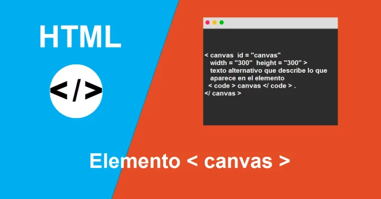

El elemento canvas de HTML5 se utiliza para dibujar gráficos y elementos gráficos en una página web mediante JavaScript. Permite crear gráficos interactivos, animaciones y juegos en el navegador.
El código busca un elemento "canvas" en la página HTML con el ID "miCanvas" y lo almacena en la variable canvas. Luego, obtiene representación en 2D del canvas y lo almacena en la variable ctx. Esto prepara el canvas para ser utilizado con JavaScript y realizar dibujos y gráficos en él mismo.
var canvas = document.getElementById("miCanvas");
var ctx = canvas.getContext("2d");
Este código HTML y JavaScript crea un elemento div con el ID "contenido4" que contiene un lienzo (canvas) de 200x200 píxeles. Luego, utiliza JavaScript para dibujar dos líneas en el lienzo: La primera línea se dibuja desde el punto (0, 0) hasta el punto (ancho del lienzo, alto del lienzo) y se le da un color azul con un grosor de 3 píxeles. La segunda línea se dibuja desde el punto (ancho del lienzo, 0) hasta el punto (0, alto del lienzo) y se le da un color rojo con un grosor de 3 píxeles. Ambas líneas se dibujan utilizando el contexto 2D del lienzo (ctx). El resultado es un lienzo con una cruz azul y roja en su interior. Esencialmente, este código ilustra cómo se pueden utilizar las capacidades de dibujo del elemento canvas en HTML utilizando JavaScript para crear elementos gráficos simples.